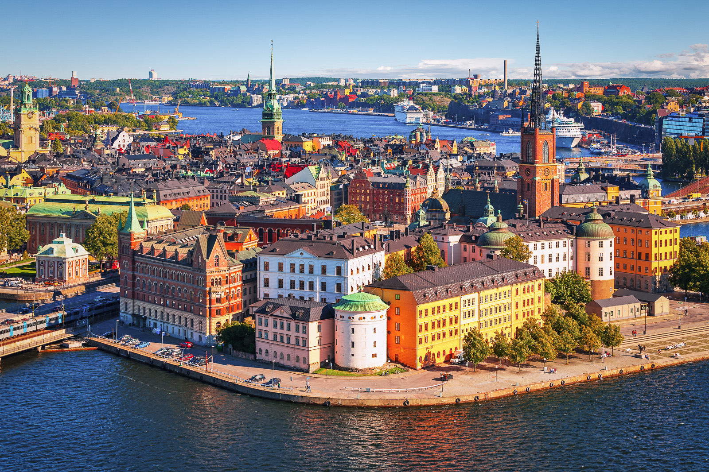
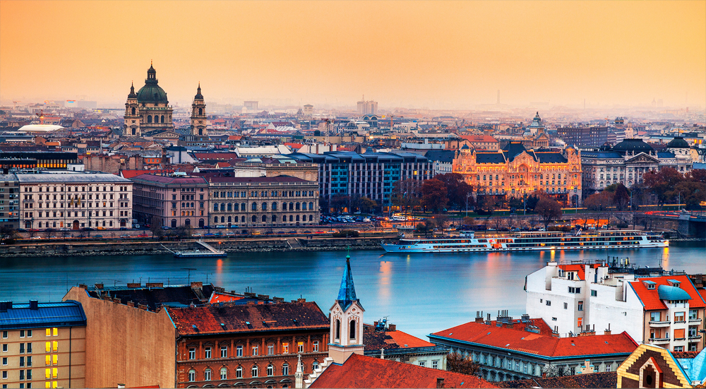
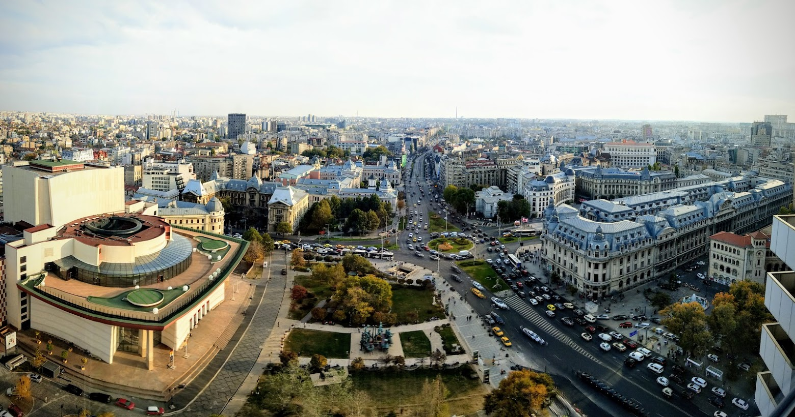
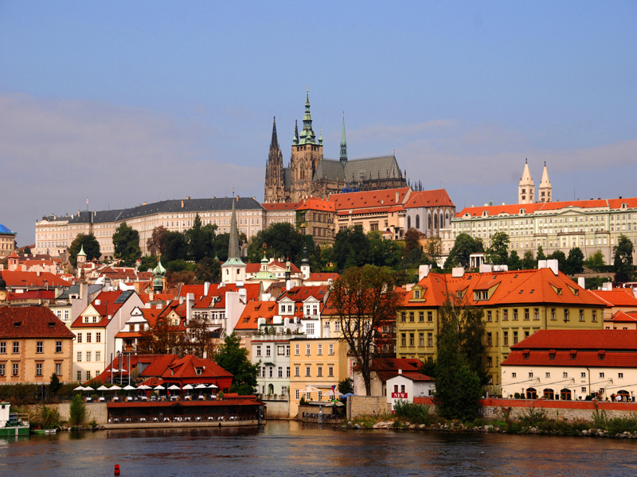
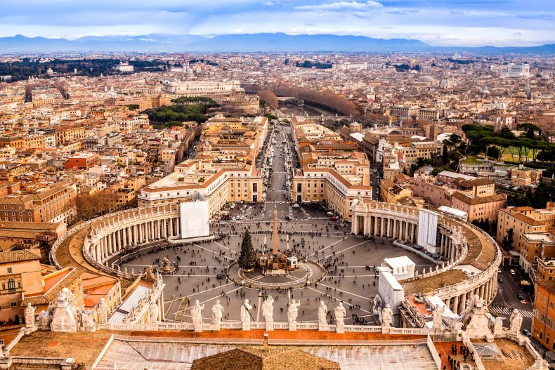
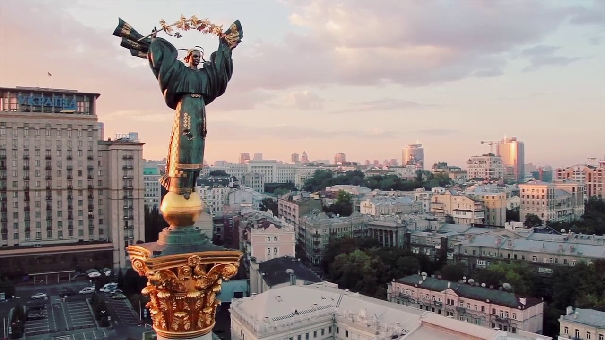

Стокгольм
Стокгольм — це витончене поєднання чотирнадцяти островів, з’єднаних мостами у єдиний простір, де морська вода заходить прямо в серце міста. Тут панує особливий баланс між величчю королівської історії Гамла Стану та прогресивним дизайном сучасних районів. Місто вражає своєю чистотою, екологічністю та унікальним метро, що нагадує підземне царство в скелях. Це місце, де життя тече у ритмі «лагам» — без поспіху, з повагою до природи та неодмінною перервою на каву, що створює атмосферу затишного північного спокою.
Більше інформації можна дізнатися натиснувши на назву міста або на його фотографію

Мадрид
Мадрид — це місто енергії та світла, де широкі проспекти з величними будівлями епохи Габсбургів межують із зеленими оазами на кшталт парку Ретіро. Він вражає своїм королівським розмахом, мистецьким духом музею Прадо та пристрасним нічним життям, що затихає лише на світанку.
Більше інформації можна дізнатися натиснувши на назву міста або на його фотографію

Брюссель
Брюссель є справжнім серцем Європи, де готична площа Гран-Плас сусідить із футуристичним Атоніумом та скляними кварталами єврочиновників. Місто пахне шоколадом і вафлями, поєднуючи в собі витончену архітектуру, бельгійський сюрреалізм та атмосферу світової дипломатії.
Більше інформації можна дізнатися натиснувши на назву міста або на його фотографію

Будапешт
Будапешт величаво розкинувся на берегах Дунаю, розділений на горбисту Буду з рибальським бастіоном та динамічний Пешт із монументальним Парламентом. Це місто термальних купалень, величних мостів та унікальних «руїн-барів», де історія імперії переплітається з сучасною культурою.
Більше інформації можна дізнатися натиснувши на назву міста або на його фотографію

Бухарест
Бухарест часто називають «Маленьким Парижем» Сходу через його елегантну забудову міжвоєнного періоду та власну Тріумфальну арку. Місто контрастів вражає гігантським Палацом Парламенту та прихованими православними церквами, зберігаючи автентичний балканський колорит серед сучасних ритмів.
Більше інформації можна дізнатися натиснувши на назву міста або на його фотографію

Відень
Відень — це втілення аристократизму, де класична музика, розкішні імперські палаци та культура старовинних кав’ярень створюють відчуття вічної елегантності. Місто надихає своїм порядком, витонченим мистецтвом Клімта та атмосферою колишньої столиці великої монархії.
Більше інформації можна дізнатися натиснувши на назву міста або на його фотографію

Рим
Рим — «Вічне місто», де кожен камінь дихає тисячолітньою історією, від Колізею до величного собору Святого Петра. Тут хаотичний італійський темперамент гармонійно поєднується з античними руїнами, бароковими фонтанами та незрівнянним ароматом свіжої пасти й еспресо.
Більше інформації можна дізнатися натиснувши на назву міста або на його фотографію

Київ
Київ — місто незламного духу та золотих куполів, що височіють над могутнім Дніпром серед розлогих каштанів. Це поєднання прадавньої княжої історії, величі Софії Київської та сучасної динаміки мегаполіса, який вражає своєю гостинністю, силою волі та неймовірним поєднанням затишних схилів і модернової архітектури.
Більше інформації можна дізнатися натиснувши на назву міста або на його фотографію